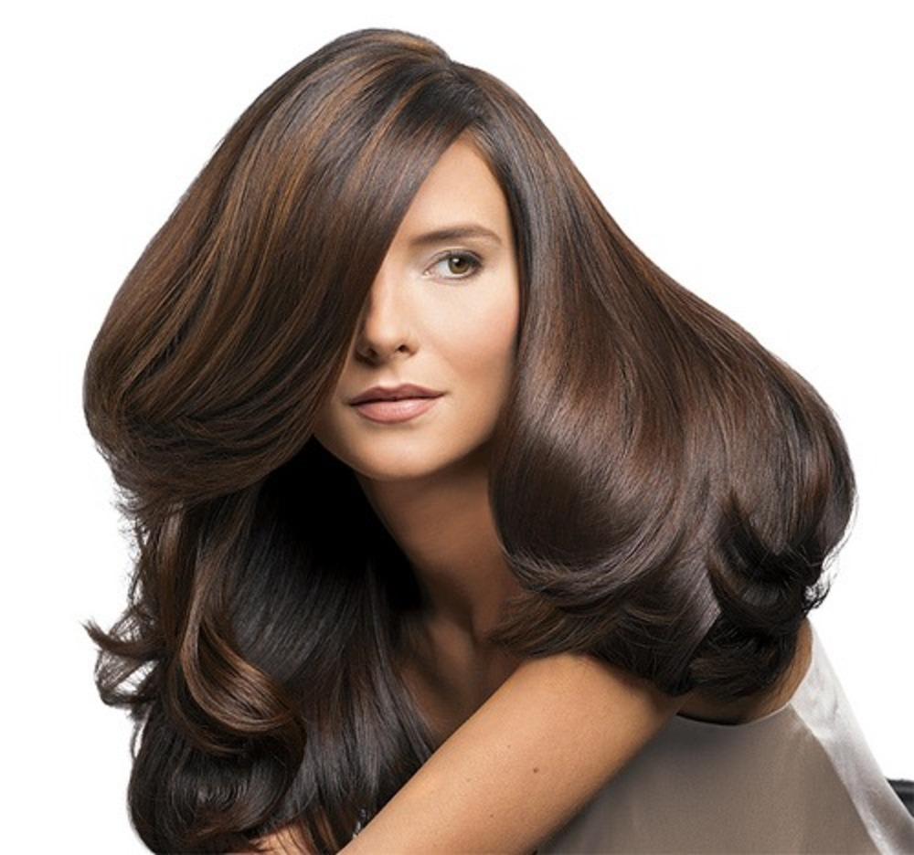
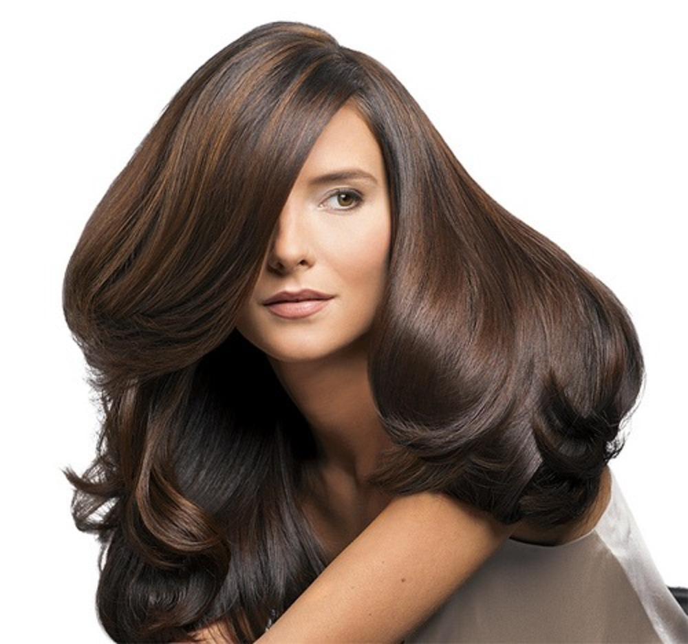

KAKO DO BUJNE I GUSTE KOSE
HIGIJENA-
Posmatrajte svoju kosu kao i telo – kao deo sebe koji
se takođe treba negovati. Kao što pažljivo birate kupke, losion
ili ulje za telo, hranite ga time, tako isto treba da se brine i o
kosi – pažljivo birati šampone i regeneratore, maske za kosu,
truditi se da svi ovi preparati budu na prirodnoj bazi i to je već
prvi korak kako doći do guste kose.
PRAVILNO PRANJE-
Najbolje je prati kosu na svaka dva-tri dana i to
nekim blagim šamponom. Voda treba biti mlaka. Prilikom
šamponiranja, masirajte kožu glave jer time takođe podstičete i
prokrvljenost temena, što je jako važno. Balzam stavljajte samo
na krajeve. Dovoljno ga je držati na kosi minut, dva pa
isperite.Ukoliko je vaša kosa masna, bez obzira na to, nemojte
je češće prati od preporučenog, eventualno na dva dana, ali
nekim prirodnim, blagim šamponom bez sulfata.
BRINITE O NJOJ-
Nemojte je raščešljavati dok je mokra! Tada se
dlake brže i lakše kidaju. Izbegavajte feniranje i presovanje
kose. Pronađite malo vremena i ostavite kosu da se sama,
prirodno prosuši. Greška koju često čine dame je da peškirom
trljaju vlažnu kosu. Nemojte to raditi, već je samo uvijte u
peškir i pustite ga da upije vlagu.
ŠIŠANJE-
Ono što isto spada u osnovnu higijenu kose, a uz to
vam pomaže i da kosa bude gušća, jeste redovno skraćivanje
krajeva. Em će vam kosa izgledati svežije i negovanije, em će
biti zdravija. Dakle, ne izbegavajte frizera.
SMANJITI FARBANJE-
Farbanje kose je super jer možeš da dobiješ
sjajnu i vidljivu promenu u svom imidžu na prilično jednostavan
način. Ali ako iznenada tvoja kosa nema volumen i gustinu već
samo cool boju, onda treba da prihvatiš sledeće: Farbe za kosu i
blanševi mogu stvarno da upropaste tvoju kosu i to nije mit!
Pravilno češljanje-Verovala ili ne, ali češljanje nije samo stvar
urednosti. Ukoliko nisi pažljiva, i te kako može da utiče na
gustinu tvoje kose. Umesto četke za kosu, izaberi češalj sa
širokim zupcima jer će on bolje da je odmrsi.
Ali naravno, kao i za kožu ishrana igra najveću ulogu.